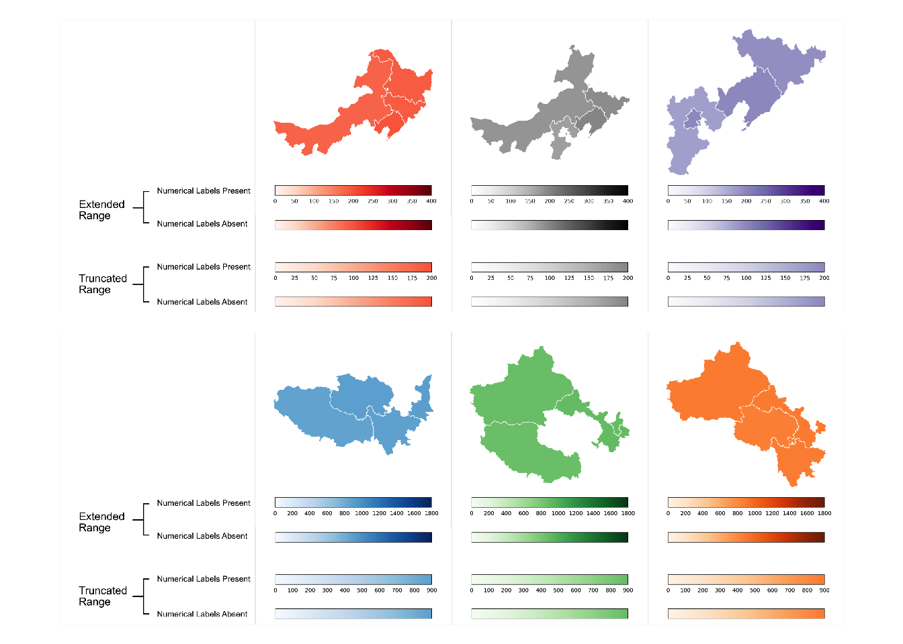
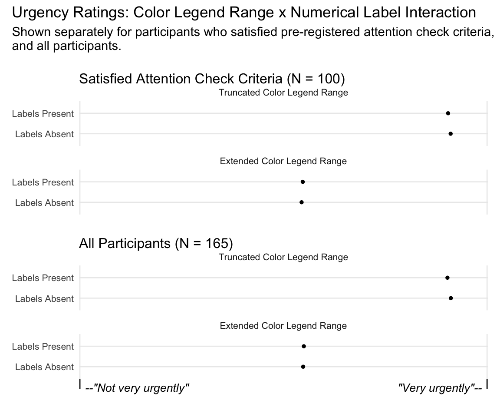

Choropleth Maps Can Convey Absolute Magnitude Through the Range of the Accompanying Color Legend
Duncan Bradley ![]()
Boshuo Zhang
Caroline Jay
Andrew J. Stewart
Abstract
Data visualization software provides the ability to create highly customizable choropleth maps. This presents an abundance of design choices. The color legend, one particular aspect of choropleth map design, has the potential to effectively convey data points’ absolute magnitudes (how large or small they are). Color legends present the mapping between a specific range of colors and a specific range of numerical values. In this experiment, we demonstrate that manipulating this range affects interpretations of the plotted values’ absolute magnitudes. Participants (N = 100) judged the urgency of addressing pollution levels as greater when the color legend’s upper bound was equal to the maximum plotted value, compared to when it was significantly larger than the maximum plotted value. This provides insight into the cognitive processing of plotted data in choropleth maps that are designed to promote inferences about overall magnitude.
Introduction
To make sense of statistics presented in newspaper articles or scientific reports, it is often important to interpret their meaning in context. This may involve determining whether the presented values represent large or small numbers. Data visualizations are often used to convey statistics, so understanding how these tools may communicate data points’ magnitudes is crucial.
Numerical values in choropleth maps are often encoded using the entire range of the chosen color palette, in order to aid discrimination and facilitate identification of spatial patterns. Thus, the range of values in the accompanying color legend typically consists of only those values which were observed. However, this is not the only application for a choropleth map. In certain cases, displaying values’ absolute magnitudes may be considered more pertinent than displaying their relative magnitudes. This would allow a viewer to gauge, on the whole, how large or small presented values are, in context. To communicate this, the range of values in the accompanying color legend may include values which were not observed but remain relevant nonetheless. Designers may wish to sacrifice discrimination ability for an overt display of magnitude, in order to convey their intended message.
Indeed, choropleth maps displaying overall magnitudes have been used in practice. Figure 1 depicts data concerning public support for a federal ban on abortion in the U.S. The accompanying color legend presents the entire range of possible values: from 0% to 100% support. Since plotted values do not exceed 30%, their magnitudes appear small, in context. In addition, whereas a typical color scale would amplify differences between regions, this design presents variability between states as low. This lends credibility to the notion that, for this aspect of a divisive issue, public support is consistently low across the U.S.
The map may appear homogenous, but choropleth maps present opportunities for conveying information beyond relative geographical differences, just as line charts may show stagnant wages. By presenting a wider numerical context, the accompanying legend imbues the map with meaning, illustrating low variability and small magnitudes. The simplicity of this message does not preclude its visualisation; as well as illuminating complex patterns, data visualisations are also designed to improve retention and engagement (Bertini et al. 2020), and support cognition (Hegarty 2011).
This paper explores cognitive processing of overall magnitude in choropleth maps. Through an empirical study, we demonstrate that color legends, which depict the mapping between colors and numerical values, can imply how large or small plotted values’ absolute magnitudes are. Even when the mapping between color and numerical value remains the same, the range of the color legend provides a crucial source of context. The relationship between this range and the plotted data influences viewers’ interpretations of magnitude.
Methodology
Outline
The present experiment investigates the influence of color legend range on the cognitive processing of magnitude. We manipulated the color legend’s upper bound, such that it was equal to the maximum plotted value (truncated range) or it was equal to double the maximum plotted value (extended range). We employ the term ‘truncated’ in a broad sense, referring to a scale that is constrained such that potentially relevant values are omitted, not simply a scale that excludes a zero value. Using a lower bound of zero reduced the number of differences between the two conditions, so that only the upper bound was manipulated. This also meant that plotted values’ variability appeared smaller, assisting participants in judging the overall magnitude of these values. For each item, the color palette, geographic regions, and the mapping between colors and numerical values, were identical across conditions. Therefore, the only difference between versions of a given item was the range of the color legend: the map itself remained unchanged.
Rather than asking participants to make abstract judgments about the size of abstract values, we presented fictitious pollution data, and asked how urgently action should be taken to address the pollution levels displayed in each data visualization. This captures participants’ assessments of magnitude through the type of judgments which can drive behavior. In addition to increased ecological validity, we also anticipated that pollution data might be able to generate a balanced set of responses to the question of urgency. A variable evoking an extreme negative reaction may have elicited responses at ceiling and one too trivial may have elicited responses at floor. We expected participants to recognize that a sufficient degree of pollution would require action, but also understand that low levels may require less urgent action. We did not provide a specific definition of urgency for participants to use when making their responses. Therefore, different participants’ responses may reflect different notions of urgency. However, the within-participants design accounts for individual variation. Each participant’s ratings are compared against their own ratings for the alternative condition, allowing for meaningful comparison between conditions.
Pollution levels were displayed in choropleth maps, which use color encoding to display data aggregated at the level of geographic areas. Note that we do not consider the designs of choropleth maps in this experiment to reflect best practice for plotting pollution statistics. Rather, these designs were motivated by the desire to examine the role of color legends in the interpretation of magnitude. Previous research has illustrated that the size of geographical regions can influence ensemble coding in choropleth maps (Schiewe 2019). However, we did not control for this aspect, instead we prioritized ecological validity by using maps with real geographical regions. These maps appeared identical across conditions in order to avoid this bias confounding results.
To control for the possibility that participants used the color legend’s numerical labels, rather than the range of values displayed, as a reference for their magnitude judgments, we omitted the color legend’s numerical labels in half of trials. This allowed us to test whether the presence of numerical labels affected the degree to which magnitude judgments were influenced by the color legend’s upper bound.
Pre-Registration
We predicted that urgency ratings would be higher for truncated legends, compared to extended legends. In addition, we planned to compare whether any difference between these two conditions was moderated by the presence or absence of numerical labels, but made no predictions about existence or direction of any main effect or interaction. Participants completed Garcia-Retamero et al.’s (Garcia-Retamero et al. 2016) Subjective Graph Literacy scale, therefore we also planned to test whether any observed effects (or lack of) could be explained by differences in data visualization literacy. This five-item scale is a quick, reliable measure that is correlated with scores on Galesic and Garcia-Retamero’s (Galesic and Garcia-Retamero 2011) test-based measure of data visualization literacy. The pre-registration, plus materials, experiment script, data and analysis code are available at https://osf.io/qe9hf/?view_only=32c420d6ef6c45b1ae2d3dc42dc6fe69. This repository contains the requisite resources to generate a fully-reproducible version of this paper.
Design
In each trial, we independently manipulated two aspects of the choropleth map. When the color legend had a truncated range, its upper bound was equal to the maximum value displayed in the map. When the color legend had an extended range, its upper bound was equal to double the maximum value (and the maximum value displayed in the map appeared at the legend’s halfway point). Numerical labels on the color legend were either present or absent. This resulted in four unique combinations of conditions. We employed a Latin-squared design, ensuring that each participant was exposed to each combination of conditions throughout the experiment, but only saw one combination for each given map. There were a total of 54 trials (48 experimental trials, six attention check trials). Example stimuli are shown in Figure 2.

Participants
We recruited participants using prolific.co. The experiment was advertised to users with English language fluency, normal or corrected-to-normal vision, and no experience of color deficiency, who had previously participated in more than 100 studies on Prolific. Participants were paid £3.50. Ethical approval was granted by The University of Manchester’s Division of Neuroscience and Experimental Psychology Ethics Committee (Ref. 2022-11115-23778).
In our pre-registration, we planned to exclude participants who failed more than one attention check question, in order to exclude those who were not sufficiently engaged in the task. However, when many more participants than expected failed more than one attention check question, this criteria was deemed too stringent and we instead awarded payment to all participants who returned data, regardless of their responses to attention check questions. Consequently, due to practical constraints, we were unable to obtain a sample which met our originally-specified sample size (N = 160) and our pre-registered inclusion criteria. Therefore, we terminated data collection once the sample of those who satisfied the attention check criteria was balanced across all four Latin-squaring lists (N = 100; 25 participants per list). We used this sample for our main analysis. As a compromise for the reduction in experimental power, we also demonstrate below that the pattern of effects is largely the same when analyzing the entire dataset (those who satisfied attention check criteria and those who did not; N = 165). In Section 5, we discuss a possible reason for the higher-than-expected rate of incorrect responses to attention check questions. Demographic information is shown in Table 1.
| Sample | Male (%) | Female (%) | Prefer not to say (%) | Mean | SD | Mean | SD | High School or Above (%) |
|---|---|---|---|---|---|---|---|---|
| N = 100 | 59.0 | 40.0 | 1.0 | 30.8 | 8.8 | 21.6 | 4.5 | 98.0 |
| N = 165 | 53.9 | 45.5 | 0.6 | 31.8 | 10.1 | 21.8 | 4.5 | 98.8 |
Procedure
The experiment was programmed using PsychoPy (Peirce et al. 2019, version 2022.1.4) and hosted on pavlovia.org. A link to an interactive version of this experiment has been excluded from this manuscript for anonymization purposes. Participants were instructed to use laptop or desktop computers, rather than another type of device and were told that the experiment was about using information to make decisions. We did not calibrate or measure color display on participants’ own screens, but using a within-participants design prevents this from influencing our results. Each participant was exposed to the both experimental conditions under the same display conditions. Participants were informed that in each map, each region’s color reflected its pollution level, and that data on different types of pollution were shown throughout the experiment, with pollution levels presented using standardized units.
In every experimental trial, the text above the map read ‘This map shows the levels of a certain type of pollution, in four regions’. Participants were advised to read the question, which was presented below the map: ‘How urgently should pollution levels in these regions be addressed?’ This question was used in all experimental trials, where the left anchor on the visual analogue response scale was labeled ‘Not very urgently’ and the right anchor was labeled ‘Very urgently’. The instructions stated that higher pollution levels need to be addressed more urgently than lower pollution levels. Participants were permitted to move the response scale marker as many times as they wished before continuing to the next trial.
Attention check items resembled normal trials except for the text displayed. Participants were asked to move the marker to one of three locations: ‘to the middle of the scale’, ‘all the way to the ’Not very urgently’ end of the scale’ or ‘all the way to the ’Very urgently’ end of the scale’. In experimental trials, response scale granularity was set to 0, which permitted participants to place the marker at any location along the response scale. In attention check trials, response scale granularity was set to 0.5, so participants were only permitted to place the marker at one of three locations specified in the question: the leftmost point, the center of the scale, or the rightmost point.
Following the final trial, participants were informed that both the data presented, and the standardized units used, were fictitious. Finally, participants were presented with a text box and the prompt ‘What strategies did you use during the study? Do you have any comments about the study? (optional)’. Average completion time was 13.57 minutes (SD = 6.24 minutes) for those who satisfied the pre-registered attention check criteria and 12.56 minutes (SD = 6.20 minutes) for the full sample.
Materials
Materials were generated using Python (version 3.9.12). Matplotlib (version 3.5.1) was used to generate color legends and geoplot (version 0.5.1) was used for plotting geospatial data.
Each visualization contained a unique combination of four neighboring Chinese provinces (except the six attention check items, which employed six existing combinations used in the experimental items). China was chosen to reduce the potential impact of prior knowledge, as Prolific’s participants tend to be located outside China. However, the choice of country was not disclosed to participants and regions were not labeled. The pollution data used were entirely fictitious, as were the ‘standardized units’ used to present the data.
The maximum value in the plotted data ranged from 200 to 900 (in multiples of 100), and the values for the other three provinces were between 10 and 30 units below this maximum value. Six Matplotlib color scales (‘Reds’, ‘Greys’, ‘Purples’, ‘Blues’, ‘Greens’, ‘Oranges’) were each used once per maximum value. These scales exhibited monotonic and approximately linear variation in lightness (L*). Monochromatic sequential scales were used for simplicity, avoiding additional differences between conditions, such as the relative amounts of different hues (multi-hue scales) or midpoints’ positions (diverging scales). Table 2 shows the start and end colors in CIEL*a*b* space, using CIE standard illuminant D65.
For each item, a ‘mappable’ object defined the mapping between numerical values and colors for both truncated and extended color legends. The lightest color in the scale was mapped to zero and the darkest color to double the maximum value. This range was employed in the extended color legend. The truncated color legend, on the other hand, terminated at the maximum value in the data, so the range was halved (but the mapping between numerical values and colors was retained). No classification was employed in the legends, for maximum consistency across conditions. Where numerical labels were present, an identical number of labels (between six and ten) appeared on both versions of a color legend. Tick marks were absent from all color legends.
| Color Scale | Range | L* | a* | b* | L* | a* | b* |
|---|---|---|---|---|---|---|---|
| Reds | Truncated | 97.17 | 2.50 | 3.58 | 62.89 | 53.29 | 45.11 |
| Reds | Extended | 97.17 | 2.50 | 3.58 | 19.69 | 41.49 | 24.73 |
| Greys | Truncated | 100.00 | 0.01 | -0.01 | 62.31 | 0.01 | -0.01 |
| Greys | Extended | 100.00 | 0.01 | -0.01 | 0.00 | 0.00 | 0.00 |
| Purples | Truncated | 98.74 | 0.69 | -0.85 | 65.59 | 11.10 | -22.97 |
| Purples | Extended | 98.74 | 0.69 | -0.85 | 18.09 | 49.37 | -54.13 |
| Blues | Truncated | 98.43 | -0.59 | -2.38 | 68.37 | -10.35 | -26.64 |
| Blues | Extended | 98.43 | -0.59 | -2.38 | 20.93 | 11.95 | -38.06 |
| Greens | Truncated | 98.43 | -2.87 | 2.76 | 72.70 | -40.34 | 31.54 |
| Greens | Extended | 98.43 | -2.87 | 2.76 | 24.36 | -30.10 | 19.31 |
| Oranges | Truncated | 97.05 | 1.68 | 5.99 | 69.77 | 36.47 | 59.19 |
| Oranges | Extended | 97.05 | 1.68 | 5.99 | 29.34 | 36.61 | 39.62 |
Analysis
Analysis Methods
Analysis was conducted in R (R Core Team 2022, version 4.2.1).
Linear mixed-effects models were constructed using lme4 (Bates et al. 2015, version 1.1.31). Random effects structures were determined using buildmer (Voeten 2022, version 2.7), which after identifying the most complex random effects structure that could successfully converge (see Barr et al. 2013), then removed random effects terms which did not significantly contribute towards explaining variance. In a diversion from the pre-registered analysis plan, we excluded the interaction term from the models used to test the main effects of color legend range and numerical label presence.
Part 1: Participants Satisfying Attention Check Criteria (N = 100)
Color Legend Ranges and Numerical Labels
Figure 3 shows the distribution of responses for color legends with truncated and extended ranges.
![A graphic showing distributions of responses for 'Extended Range' and 'Truncated Range'. Distributions are shown separately for each condition using histograms, boxplots and circles representing individual data points. On the left side is the label "Not very urgently" and on the right "Very urgently". The top histogram, with the label "Extended Range" resembles a Gaussian curve, with its peak roughly in the middle of the axis. The boxplot and raw data also show observations clustered around the middle of the axis. The bottom histogram, with the label "Truncated Range" peaks just before the right hand side of the axis. The boxplot and raw data also show observations are heavily left-skewed.](ChoroplethMagnitude_files/figure-html/fig-main-effect-chart-1.png)
Linear mixed-effects modelling revealed that urgency was rated as significantly higher when the color legend had a truncated range (its upper bound was equal to the maximum value in the dataset) compared to when the color legend had an extended range (its upper bound was equal to double the maximum value): \(\chi^2\)(1) = 225.41, p < .001, \(\eta_p^2\) = 0.90.
Ratings were not significantly different when numerical labels were present, compared to when they were absent: \(\chi^2\)(1) = 0.35, p = .556, \(\eta_p^2\) < 0.01.
There was no interaction between color legend range and numerical labels: \(\chi^2\)(1) = 1.73, p = .189, \(\eta_p^2\) = 0.02. These models all employed random intercepts for participants with random slopes for color legend range, numerical label presence, and the interaction between these terms, plus random intercepts for items.
Data Visualization Literacy
Adding participants’ data visualization literacy as an additional fixed effect did not remove the significant effect of color legend range: \(\chi^2\)(1) = 260.93, p < .001, \(\eta_p^2\) = 0.89. This indicates that differences in data visualization literacy cannot explain this effect. The numerical label manipulation remained non-significant when accounting for literacy (\(\chi^2\)(1) = 0.30, p = .586, \(\eta_p^2\) < 0.01). The interaction remained non-significant when accounting for literacy (\(\chi^2\)(1) = 3.21, p = .073, \(\eta_p^2\) < 0.01). These models employed random intercepts for participants with random slopes for color legend range and numerical label presence, plus random intercepts for items with random slopes for color legend range.
Part 2: All Participants (N = 165)
Color Legend Ranges and Numerical Labels
The above analysis was conducted using data from the 100 participants who satisfied the pre-registered attention check criteria. However, smaller samples are associated with lower statistical power. Below, we conduct the same analysis on the full sample of 165 participants (those who satisfied the pre-registered attention check criteria and those who did not).
Urgency was rated as significantly higher when a truncated color legend range was used, compared to when an extended color legend range was used: \(\chi^2\)(1) = 272.40, p < .001, \(\eta_p^2\) = 0.87. Ratings were not significantly different when numerical labels were present, compared to when they were absent: \(\chi^2\)(1) = 1.95, p = .163, \(\eta_p^2\) = 0.01. These models employed random intercepts for participants with random slopes for color legend range, numerical label presence, and the interaction between these terms, plus random intercepts for items with random slopes for color legend range.
There was a significant interaction between color legend range and numerical label presence: \(\chi^2\)(1) = 6.41, p = .011, \(\eta_p^2\) < 0.01. This model employed random intercepts for participants with random slopes for color legend range and numerical label presence, plus random intercepts for items with random slopes for color legend range. We conducted pairwise comparisons with Sidak adjustment using the emmeans package (Lenth 2021). For choropleth maps with extended color legend ranges, there was no difference between ratings for labeled and unlabeled color legends: z = 0.59, p = .962, Cohen’s d = 0.02. For choropleth maps with truncated color legend ranges, higher ratings were awarded when numerical labels were absent, compared to when they were present: z = 2.99, p = .011, Cohen’s d = 0.10. Figure 4 displays the means and 95% confidence intervals for each combination of conditions, for both samples of participants: those who satisfied the pre-registered attention check criteria, and the full sample.

Data Visualization Literacy
The same pattern of results was observed when accounting for differences in data visualization literacy. There was a significant effect of color legend range (\(\chi^2\)(1) = 272.45, p < .001, \(\eta_p^2\) = 0.87) and no effect of numerical label presence (\(\chi^2\)(1) = 2.09, p = .148), \(\eta_p^2\) = 0.01. The interaction between color legend range and numerical label presence remained: \(\chi^2\)(1) = 6.47, p = .011, \(\eta_p^2\) < 0.01. These models employed random intercepts for participants with random slopes for color legend range and numerical label presence, plus random intercepts for items with random slopes for color legend range.
Exploratory Analysis
Our pre-registered analysis did not detect an effect of the presence of numerical values on urgency ratings. However, a more fine-grained analysis can explore the role of numerical labels with greater sensitivity. This exploratory analysis examines whether urgency ratings are influenced by the actual numerical values displayed. We systematically varied the maximum value displayed in each map, which ranged from 200 to 900. Other plotted values were defined in relation to this value: between 10 and 30 units less than the maximum value. Modelling the effect of different maximum values on ratings will reveal whether judgments were informed by the numerical values displayed.
When considering only maps with numerical labels present, ratings increased as a function of maximum value (\(\chi^2\)(1) = 27.90, p < .001, \(\eta_p^2\) = 0.48). This model employed random intercepts for participants with random slopes for color legend range, plus random intercepts for items with random slopes for color legend range. However, ratings also increased as a function of maximum value even when numerical labels were absent (\(\chi^2\)(1) = 16.85, p < .001, \(\eta_p^2\) = 0.32). This model employed random intercepts for participants with random slopes for color legend range, plus random intercepts for items. There was no significant interaction between maximum value and numerical label presence (\(\chi^2\)(1) = 2.22, p = .137, \(\eta_p^2\) < 0.01). This model employed random intercepts for participants with random slopes for color legend range and numerical label presence, plus random intercepts for items with random slopes for color legend range.
This suggests that the numerical labels themselves were not responsible for the effect of maximum value. Instead, this effect may have been driven by the appearance of the choropleth map. The color for the maximum value was identical in each map with the same color palette, but the three accompanying values in each map were always between 10 and 30 units less than the maximum value. Consequently, these values were represented by darker colors when the maximum value was higher, thus conveying greater overall magnitude. Color legend range (\(\eta_p^2\) = 0.89) remains a greater influence than maximum value (\(\eta_p^2\) = 0.44).
In the models for participants who satisfied the pre-registered attention check criteria and those who did not (N = 165), there were significant effects of maximum value, for both maps with labeled color legends (\(\chi^2\)(1) = 28.55, p < .001, \(\eta_p^2\) = 0.50) and also maps with unlabeled color legends (\(\chi^2\)(1) = 16.27, p < .001, \(\eta_p^2\) = 0.32). These models employed random intercepts for participants with random slopes for color legend range, plus random intercepts for items with random slopes for color legend range. There was no significant interaction between maximum value and numerical label presence (\(\chi^2\)(1) = 3.51, p = .061, \(\eta_p^2\) < 0.01). This model employed random intercepts for participants with random slopes for color legend range and numerical label presence, plus random intercepts for items with random slopes for color legend range. Color legend range (\(\eta_p^2\) = 0.87) remains a greater influence than maximum value (\(\eta_p^2\) = 0.45).
Discussion
Choropleth maps are typically used to convey spatial variability, but may alternatively be employed to convey overall magnitude. This experiment clearly demonstrated that the range of the accompanying color legend influences interpretations of absolute magnitude in such choropleth maps. When the color legend’s upper bound was equivalent to the maximum plotted value, participants rated the urgency of addressing pollution levels as higher, compared to when the color legend’s upper bound was equal to double the maximum plotted value. This illustrates that viewers use color legends to put numbers’ magnitudes into perspective, interpreting magnitude with respect to the range of the color legend. A color legend does not only provide a mapping between numerical values and colors, it also provides a range of values relevant for considering the absolute magnitude of presented data.
Crucially, the colors used to display the data in the maps, as well as the underlying numerical values, were identical across conditions. Therefore, differences in participants’ judgments between conditions were not due to these factors. Instead, participants formed different impressions of these data based on the context in which they were presented. We do not suggest that one color legend arrangement used in this experiment was misleading and the other truthful. Rather, we suggest that, under certain circumstances, either could be characterized as misleading. Thus, doctored data and deliberate deception are not the only practices behind problematic visualizations.
Color legends simultaneously encode changes in number through both color and physical position. Different values are represented by different colors and occupy different positions on the color legend. In the present experiment, plotted values’ analogous positions in the truncated color legend were on the far right hand side, and their corresponding colors were among the darkest in the legend. On the other hand, plotted values’ analogous positions were in the middle of the extended color legend, and their corresponding colors were neither the darkest nor the lightest in the legend. This experiment cannot determine whether the location of plotted values on the legend, the range of colors included in the legend, or both of these factors, influenced processing of magnitude. The manipulation of numerical labels does not assist in answering this question because color legends still encode changes in number even when these changes are not labeled. However, this question may have little practical relevance since these aspects are intrinsically linked in a typical color legend.
In this experiment, the width of truncated and extended color legends was identical. In the truncated color legend, a smaller range of colors spanned the same distance: there was less variation in color over the same amount of space. We have not identified any way in which this could explain the present set of results.
Additional Analyses
Accounting for subjective data visualization literacy did not change the pattern of results. This suggests that data visualization literacy is not responsible for the observed effect of color legend range on interpretations of magnitude. This accords with the finding that data visualization literacy levels did not explain the bias in judgments caused by truncated axes (Yang et al. 2021). Yang et al. (2021) suggest that data visualization literacy measures capture whether an individual has the skills required for comprehending typical chart formats. However, they do not appear to extend to aspects of visualization comprehension which are informed by intuitive judgments rather than basic training.
Our results demonstrate that numerical labels did not influence judgments. Our pre-registered analysis found that there was no difference between ratings for maps with and without numerical labels on the color legend. An exploratory analysis examining this further also indicates that increases in the numerical values displayed on the color legend were not responsible for greater urgency ratings. Instead, it is likely that increased urgency ratings associated with higher maximum values were related to the presence of darker colors in the maps. This was a consequence of accompanying data points’ increased proximity to the maximum value at higher maximum values (see Figure 2).
For data quality reasons, we conducted our main analysis on a sample of 100 participants who met our pre-registered attention check threshold (no more than one of six attention check questions answered incorrectly). However, we also conducted the same analysis on the full sample of 165 participants, in the interest of validity. The pattern of results in the two samples was extremely similar, indicating similar levels of engagement with the task regardless of attention check scores. Participants may have withdrawn attention from the accompanying text and question once they were aware that these did not change across experimental trials, consequently failing to notice attention-check trials.
The only difference between the pattern of results for these two samples was the interaction between color legend range and numerical label presence. This interaction was not observed in the more selective sample but observed in the full sample. However, Figure 4 illustrates that the pattern of responses was remarkably similar. In both samples, the difference between ratings for the labeled and unlabeled versions of the truncated color legend was very small, which suggests the significant result was driven by low variance within conditions and increased statistical power in the larger sample. The inconsistency in inferential statistics between samples suggests that this interaction, if not spurious, is not particularly robust.
Relationship to Prior Work
Recommendations for best practice in choropleth mapp design are focused on conveying plotted values’ relative magnitudes (Dent et al. 2009, Kraak and Ormeling 2013). In this work, we suggest that conveying relative values is a sufficient condition for choropleth mapping, but not a necessary condition. We demonstrate that encoding plotted values with a smaller range of colors, and including a wider range in the accompanying legend, informs judgements about absolute magnitude. This is consistent with other experiments demonstrating legend design can affect cognitive processing of an accompanying map (Li and Qin 2014, Gołębiowska 2015, Edler et al. 2020, Hepburn et al. 2021).
Investigations into chart design have revealed that the range of values surrounding plotted data influences interpretations. Several experiments have observed that participants use axes as a source of context for assessing the magnitude of difference between values (Pandey et al. 2015, Witt 2019, Correll et al. 2020, Yang et al. 2021). The present experiment provides further evidence for a less-frequently explored phenomenon: that design choices can affect judgments of the magnitude of values themselves. Like Stone et al. (2003) and Sandman et al. (1994), we demonstrate that plotted values seem greater when they are closer to a data visualization’s upper bound. However, this experiment also demonstrates that these types of effects are not unique to data visualizations using geometric encodings. Choropleth maps, where the range of values is presented in a color legend, can also elicit this bias. Arguably, the manipulation in choropleth maps is even more subtle, because of the unique way that choropleth maps separate encoded data from the color legend. In data visualizations such as bar charts, changing the range of values alters the appearance of the data itself (an extended y-axis results in a compressed bar). The present experiment’s findings are particularly striking given that the appearance of data remained consistent despite changes to the color legend’s upper bound. This suggests differences in judgments were not driven by the visual appearance of the data, but by the interpretation of the data in relation to the range of values in the color legend.
This finding is also connected to research on the interpretation of quantity in colormap visualizations. Schiewe (2019) observed that assessment of values presented in choropleth maps are influenced by driven by the coverage of different colors within a map (i.e., the relationship between color and region size). We expand upon this work by identifying another factor which biases judgments of data in choropleth maps, yet does not change the appearance of the map itself. Like Correll et al. (2018), we demonstrate that manipulating a color legend is sufficient to influence participants’ responses. Schloss et al.’s (2019) results demonstrated that a colormap’s background color is interpreted as corresponding to the smallest quantity when a scale appears to vary in opacity. That is, background color provides a cue to the size of data points when taken to represent the minimum value. The present experiment demonstrates that, like quantity judgments, magnitude judgments are also driven by visual cues to the minimum and maximum values.
A bias wherein the same values are judged differently depending on their surrounding context is often described as a framing effect (Tversky and Kahneman 1974). This bias involves using inessential accompanying information to inform one’s judgement, rather than discounting this information in order to generate a wholly disinterested assessment. Other research has also demonstrated that the interpretation of numerical values depends on their placement within a range. For example, the same salary is rated as more desirable when it appears near the top rather than the bottom of a range (Brown et al. 2008). The present experiment translates this effect to the visual domain. As Yang et al. (2021) suggest, biases in viewers’ processing of information in data visualizations can be explained with reference to Grice’s (1975) cooperative principle. Applied to the present experiment, this suggests that viewers would interpret the implication of certain magnitudes through the color legend design as indicative of the designer’s intention to communicate values’ true magnitudes.
Limitations and Future Research Directions
Choropleth maps are typically designed to communicate differences between values, rather than values’ absolute magnitudes. Discrimination between values is facilitated when the color legend’s bounds are equal to the minimum and maximum values in the dataset. Therefore, designers may have to make a trade-off between conveying absolute magnitude and conveying differences. Which aspect of the data a designer wishes to emphasize will depend on the purpose of their data visualization. For example, a designer may wish to highlight the geographical differences in the construction of new houses, or may wish to highlight the fact that there is no region where targets are being met. The work reported here suggests that extending the range of the color legend beyond the range of the observed data would promote the latter message.
It is important to recognize that a color scale’s bounds may not always be interpreted as a complete and accurate source of context for assessing magnitude. Pollution measurements are likely not among the most intuitive numbers to interpret, and in the present experiment, even viewers well-versed in pollution data were prohibited from applying their knowledge, since the fictitious data were presented using fictitious units. The influence of existing knowledge was eliminated to facilitate examination of the cognitive mechanism involved in magnitude judgments. Therefore, in this experiment, there were no external cues to magnitude. Consequently, our findings are most relevant for understanding interpretation of magnitude where units are unfamiliar or insignificant. Familiarity with a data visualization’s subject matter will typically provide an ability to independently assess magnitudes based on presented values only, which may reduce the influence of design choices. In addition, certain forms of number may carry cues to magnitude even in the absence of existing knowledge. For example, when assessing certain proportions, viewers are likely to be aware that 100% is the maximum possible value and 0% the minimum. Future work should explore the degree to which these scenarios affect how color legends inform magnitude judgments.
Future work should quantify the difference between different color legend ranges in concrete units (e.g., a specific difference in financial investment, or a specific time-frame for resolving an issue). The visual analogue scale used in our investigation does not permit this. However, it was able to reveal that interpretations of magnitude differed between conditions, reflecting the type of inferences that are likely to precede decision-making. The within-participants design ensures that participants’ different notions of urgency do not interfere with comparisons between experimental conditions. Future work should also examine a wider variety of topics beyond pollution data in order to examine generalizability. However, our investigation has nonetheless produced informative results, and the observed bias, a framing effect, occurs widely.
Numerical labels at the extremes of color legends are sometimes open-ended. That is, a label at the lower bound may be ‘<30’ rather than ‘30’. This interrupts the one-to-one mapping between colors and values. Instead, a specific position and color on the color legend may represent multiple corresponding numerical values. Consequently, more extreme values may exist in the data than those represented by the extremes of the legend. This introduces ambiguity regarding the relevant range of values to consider when assessing magnitude, making the color legend a less informative reference. Future research should examine whether the present findings are replicated when a color legend uses this type of numerical label at its extremes, or whether viewers treat color legends with these labels as a weaker cue to plotted values’ magnitudes. Experiments varying the range of values included in classified and multi-hue legends would also be beneficial.
Implications
The present experiment contributes to our understanding of cognitive mechanisms involved in assessing magnitudes in choropleth maps. We observed that assessments are informed by the range of the color legend, demonstrating that color legends can be exploited to influence viewers’ judgments of data points’ absolute magnitudes. Further work is required in order to identify various factors influencing the strength of this effect, but the essential implication entails designers considering how magnitude appears as a result of their chosen color legend’s range. Without deliberate consideration about the choice of value for a color legend’s upper bound, misleading visualizations may emerge. However, like Correll et al. (2020), we argue there can be no a priori system for identifying a range of values that guarantees an unbiased visualization. Instead, the range of the color legend should be appropriate for the data displayed, the intended message, and the task. There are also implications for data visualization software developers in facilitating designers’ ability to specify a custom color legend range when required.
Conclusion
Understanding the consequences of design choices is crucial for understanding how to present data effectively. In choropleth maps, the upper bound of the accompanying color legend influences how large or small plotted values appear to viewers. Data points’ proximity to the upper bound increases impressions of their absolute magnitude. This finding provides insight into the processing of choropleth maps designed to convey overall magnitude, and promotes use of a suitable range of values on a color legend.
Acknowledgements
This work was supported by the Economic and Social Research Council under Grant ES/P000665/1.
Disclosure Statement
The authors report there are no competing interests to declare.
References
Barr, D.J., Levy, R., Scheepers, C., and Tily, H.J., 2013. Random effects structure for confirmatory hypothesis testing: Keep it maximal. Journal of Memory and Language, 68 (3), 255–278.
Bates, D., Mächler, M., Bolker, B., and Walker, S., 2015. Fitting Linear Mixed-Effects Models Using lme4. Journal of Statistical Software, 67 (1).
Bertini, E., Correll, M., and Franconeri, S., 2020. Why Shouldn’t All Charts Be Scatter Plots? Beyond Precision-Driven Visualizations. arXiv:2008.11310 [cs].
Brown, G.D.A., Gardner, J., Oswald, A.J., and Qian, J., 2008. Does Wage Rank Affect Employees’ Well-being? Industrial Relations, 47 (3), 355–389.
Brychtova, A. and Coltekin, A., 2015. Discriminating classes of sequential and qualitative colour schemes. International Journal of Cartography, 1 (1), 62–78.
Correll, M., Bertini, E., and Franconeri, S., 2020. Truncating the Y-Axis: Threat or Menace? In: Proceedings of the 2020 CHI Conference on Human Factors in Computing Systems. Honolulu HI USA: ACM, 1–12.
Correll, M., Moritz, D., and Heer, J., 2018. Value-Suppressing Uncertainty Palettes. In: Proceedings of the 2018 CHI Conference on Human Factors in Computing Systems. Montreal QC Canada: ACM, 1–11.
Cromley, R.G. and Ye, Y., 2006. Ogive-based Legends for Choropleth Mapping. Cartography and Geographic Information Science, 33 (4), 257–268.
Dasgupta, A., Poco, J., Rogowitz, B., Han, K., Bertini, E., and Silva, C.T., 2020. The Effect of Color Scales on Climate Scientists’ Objective and Subjective Performance in Spatial Data Analysis Tasks. IEEE Transactions on Visualization and Computer Graphics, 26 (3), 1577–1591.
Dent, B.D., Torguson, J., and Hodler, T.W., 2009. Cartography: Thematic Map Design. 6th ed. New York: McGraw-Hill Higher Education.
Driessen, J.E.P., Vos, D.A.C., Smeets, I., and Albers, C.J., 2022. Misleading graphs in context: Less misleading than expected. PLOS ONE, 17 (6), e0265823.
Dykes, J., Wood, J., and Slingsby, A., 2010. Rethinking Map Legends with Visualization. IEEE Transactions on Visualization and Computer Graphics, 16 (6), 890–899.
Edler, D., Keil, J., Tuller, M.-C., Bestgen, A.-K., and Dickmann, F., 2020. Searching for the “Right” Legend: The Impact of Legend Position on Legend Decoding in a Cartographic Memory Task. The Cartographic Journal, 57 (1), 6–17.
Fischer, J. and Ali, A., 2021. A Federal Ban on Abortion is Wildly Unpopular in All 50 States. Data For Progress.
Galesic, M. and Garcia-Retamero, R., 2011. Graph Literacy: A Cross-Cultural Comparison. Medical Decision Making, 31 (3), 444–457.
Garcia-Retamero, R., Cokely, E.T., Ghazal, S., and Joeris, A., 2016. Measuring Graph Literacy without a Test: A Brief Subjective Assessment. Medical Decision Making, 36 (7), 854–867.
Garcia-Retamero, R. and Galesic, M., 2010. Who profits from visual aids: Overcoming challenges in people’s understanding of risks. Social Science & Medicine, 70 (7), 1019–1025.
Gołębiowska, I., 2015. Legend Layouts for Thematic Maps: A Case Study Integrating Usability Metrics with the Thinking Aloud Method. The Cartographic Journal, 52 (1), 28–40.
Grice, P., 1975. Logic and Conversation. In: P. Cole and J.L. Morgan, eds. Syntax and Semantics Vol.3: Speech Acts. New York: Academic Press, 41–58.
Harrower, M. and Brewer, C.A., 2003. ColorBrewer.org: An Online Tool for Selecting Colour Schemes for Maps. The Cartographic Journal, 40 (1), 27–37.
Hegarty, M., 2011. The Cognitive Science of Visual-Spatial Displays: Implications for Design. Topics in Cognitive Science, 3 (3), 446–474.
Hepburn, J., Fairbairn, D., James, P., and Ford, A., 2021. Do we need legends? An eye tracking study.
Hu, T.-Y., Jiang, X.-W., Xie, X., Ma, X.-Q., and Xu, C., 2014. Foreground-background salience effect in traffic risk communication. Judgment and Decision Making, 9 (1), 8.
Hunter, J.D., 2007. Matplotlib: A 2D Graphics Environment. Computing in Science & Engineering, 9 (3), 90–95.
Jenks, G.F. and Caspall, F.C., 1971. ERROR ON CHOROPLETHIC MAPS: DEFINITION, MEASUREMENT, REDUCTION. Annals of the Association of American Geographers, 61 (2), 217–244.
Kraak, M.-J. and Ormeling, F.J., 2013. Cartography: Visualisation of Spatial Data. 3rd ed. Routledge.
Kumar, N., 2004. Frequency Histogram Legend in the Choropleth Map: A Substitute to Traditional Legends. Cartography and Geographic Information Science, 31 (4), 217–236.
Lenth, R.V., 2021. Emmeans: Estimated Marginal Means, aka Least-Squares Means.
Li, Z. and Qin, Z., 2014. Spacing and alignment rules for effective legend design. Cartography and Geographic Information Science, 41 (4), 348–362.
Lin, S., Fortuna, J., Kulkarni, C., Stone, M., and Heer, J., 2013. Selecting Semantically-Resonant Colors for Data Visualization. Computer Graphics Forum, 32 (3pt4), 401–410.
Okan, Y., Stone, E.R., Parillo, J., Bruine de Bruin, W., and Parker, A.M., 2020. Probability Size Matters: The Effect of Foreground‐Only versus Foreground+Background Graphs on Risk Aversion Diminishes with Larger Probabilities. Risk Analysis, 40 (4), 771–788.
Pandey, A.V., Rall, K., Satterthwaite, M.L., Nov, O., and Bertini, E., 2015. How Deceptive are Deceptive Visualizations?: An Empirical Analysis of Common Distortion Techniques. In: Proceedings of the 33rd Annual ACM Conference on Human Factors in Computing Systems - CHI ’15. Seoul, Republic of Korea: ACM Press, 1469–1478.
Paul, B.K., 1993. Choropleth Map Review: A Class Exercise. Journal of Geography, 92 (5), 227–230.
Peirce, J., Gray, J.R., Simpson, S., MacAskill, M., Höchenberger, R., Sogo, H., Kastman, E., and Lindeløv, J.K., 2019. PsychoPy2: Experiments in behavior made easy. Behavior Research Methods, 51 (1), 195–203.
R Core Team, 2022. R: A Language and Environment for Statistical Computing.
Retchless, D.P. and Brewer, C.A., 2016. Guidance for representing uncertainty on global temperature change maps. International Journal of Climatology, 36 (3), 1143–1159.
Sandman, P.M., Weinstein, N.D., and Miller, P., 1994. High Risk or Low: How Location on a "Risk Ladder" Affects Perceived Risk. Risk Analysis, 14 (1), 35–45.
Schiewe, J., 2019. Empirical Studies on the Visual Perception of Spatial Patterns in Choropleth Maps. KN - Journal of Cartography and Geographic Information, 69 (3), 217–228.
Schloss, K.B., Gramazio, C.C., Silverman, A.T., Parker, M.L., and Wang, A.S., 2019. Mapping Color to Meaning in Colormap Data Visualizations. IEEE Transactions on Visualization and Computer Graphics, 25 (1), 810–819.
Stone, E.R., Sieck, W.R., Bull, B.E., Frank Yates, J., Parks, S.C., and Rush, C.J., 2003. Foreground:background salience: Explaining the effects of graphical displays on risk avoidance. Organizational Behavior and Human Decision Processes, 90 (1), 19–36.
Stone, E.R., Yates, J.F., and Parker, A.M., 1997. Effects of numerical and graphical displays on professed risk-taking behavior. Journal of Experimental Psychology: Applied, 3 (4), 243–256.
Stone, M., Szafir, D.A., and Setlur, V., 2014. An Engineering Model for Color Difference as a Function of Size. Boston, Massachusetts: Society for Imaging Science; Technology, 6.
Szafir, D.A., Stone, M., and Gleicher, M., 2014. Adapting Color Difference for Design. Boston, Massachusetts: Society for Imaging Science; Technology, 6.
Taylor, B.G. and Anderson, L.K., 1986. Misleading Graphs: Guidelines for the Accountant. Journal of Accountancy, 162 (4), 126–135.
Tobler, W.R., 2010. Choropleth Maps Without Class Intervals? Geographical Analysis, 5 (3), 262–265.
Tversky, A. and Kahneman, D., 1974. Judgment under Uncertainty: Heuristics and Biases. Science, 185 (4157), 1124–1131.
Voeten, C.C., 2022. Buildmer: Stepwise Elimination and Term Reordering for Mixed-Effects.
Wickham, H., 2016. ggplot2. New York, NY: Springer Science+Business Media, LLC.
Witt, J.K., 2019. Graph Construction: An Empirical Investigation on Setting the Range of the Y-Axis. Meta-Psychology, 2, 1–20.
Yang, B.W., Vargas Restrepo, C., Stanley, M.L., and Marsh, E.J., 2021. Truncating Bar Graphs Persistently Misleads Viewers. Journal of Applied Research in Memory and Cognition, S2211368120300978.